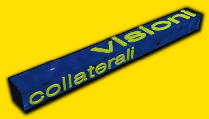

i.. ludiamoci: 1995 | 1996 | 1997 | 1998 | 1999

I° concorso di computer grafica
- Bando di concorso -
Art. 1
La partecipazione al concorso è libera e gratuita.
Ogni autore potrà partecipare con una sola opera originale ed inedita.
Art. 2
I lavori dovranno essere presentati in forma digitale tramite supporto magnetico/ottico oppure tramite email (cerin0@metro.it con il lavoro in attachment) con le seguenti caratteristiche: dimensioni 800x600 pixel, 24 bit colore, formato JPEG o TIFF.
Il tema scelto per questa prima edizione del concorso è "Spazio ed illusione", benchè il rispetto del tema non sia vincolante ai fini delle selezioni si richiede agli autori di concentrare la propria attenzione sul suo sviluppo.
Art. 3
Per partecipare al concorso è necessario presentare il seguente materiale: una scheda informativa sull'autore comprendente dati anagrafici, recapito telefonico, eventuale email ed una scheda informativa sull'opera presentata, in quest'ultima dovrà essere specificato almeno l'hardware ed il software utilizzati nella realizzazione dell'opera stessa.
Art. 4
Le domande di partecipazione con allegati i materiali presentati di cui all'articolo 3, dovranno pervenire entro il 30 Agosto 1998 presso la sede dell'ARCI NUOVA ASSOCIAZIONE DI PESCARA, COMITATO PROVINCIALE in Via C.Battisti 61, CAP 65122, oppure utilizzando l'email precedentemente fornita.
Art. 5
Sono previsti tre premi per i primi tre classificati, come da articolo 6.
La votazione avverrà attraverso una media matematica utilizzando i giudizi di una commissione interna composta da 7 elementi e dal giudizio del pubblico che interverrà alla manifestazione.
In entrambi i casi verranno utilizzate schede anonime.
Le votazioni popolari si svolgeranno nel corso della manifestazione I...ludiamoci'98 negli orari di apertura e termineranno alle ore 20:00 del 13 Settembre.
Art. 6
I premi consistono in buoni acquisto del valore di L. 300'000, 200'000 e 100'000 rispettivamente per il primo, secondo e terzo classificato da utilizzare per l'acquisto di hardware/software presso la PDL Informatica di Pescara in via Genova, 63.
Art. 7
Il materiale documentativo consegnato dagli autori delle opere in concorso non verrà restituito ma sarà impegnato per la documentazione dell'attività dell'Arci Comitato Provinciale di Pescara.
Art. 8
La partecipazione al concorso comporta automaticamente l'accettazione integrale del presente bando ed il consenso alla riproduzione grafica, fotografica e video delle opere scelte per qualsiasi pubblicazione di carattere documentativo e promozionale in riferimento alla manifestazione.
Art. 9
L'organizzazione del concorso si riserva il diritto di pubblicare, con mezzi e supporti diversi le opere in concorso per attività di documentazione e promozione della manifestazione e degli autori.